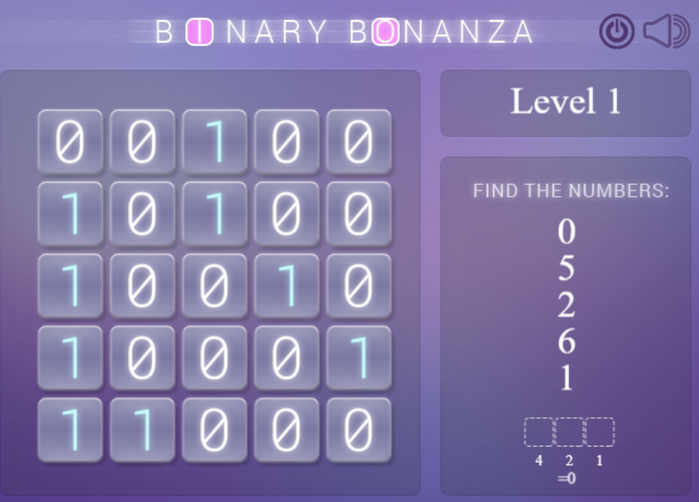

Wij werken met het 10-tallig stelsel: met de 10 symbolen 0..9 10 is het grondgetal. We zijn dat gewend. In het binair stelsel is het grondgetal: 2. Er zijn 2 symbolen: 0 en 1. Hiermee kun je alle getallen maken. Dat hiermee gewerkt wordt in de informatica heeft te maken met het feit dat een computer werkt op stroompjes En een stroom kan aan zijn of uit.

Speel het spelletje Binary Bonanza en je leert snel omrekenen
